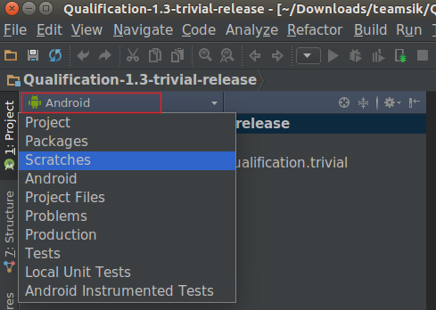
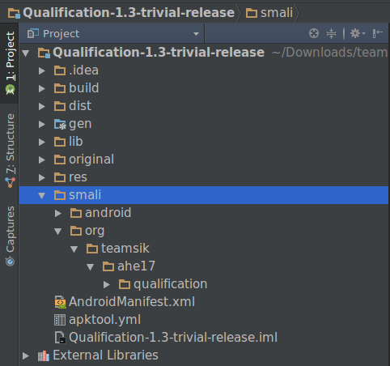
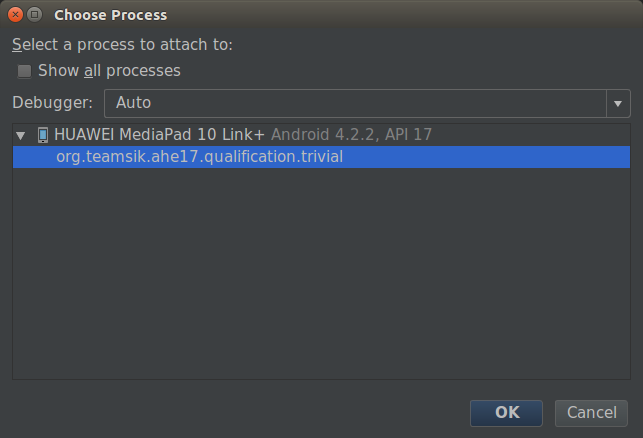
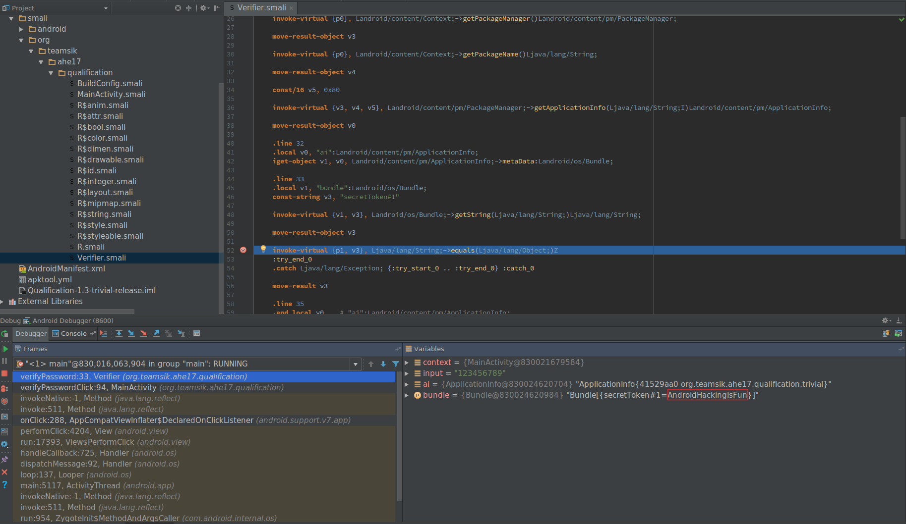
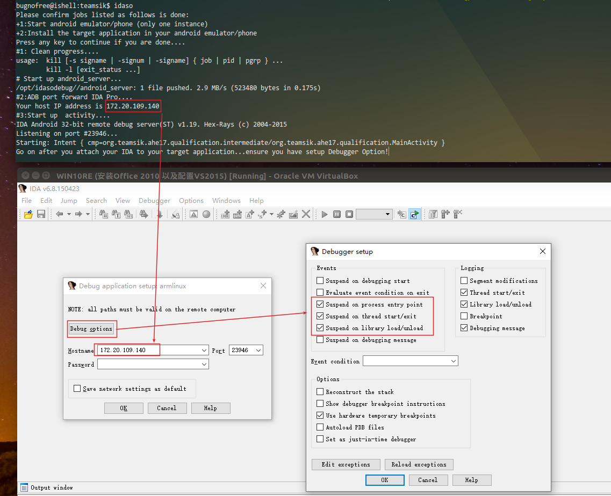
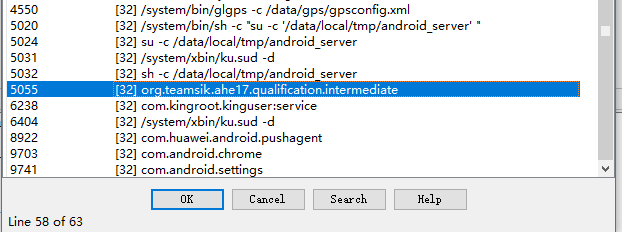
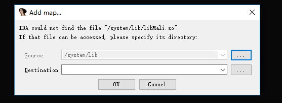
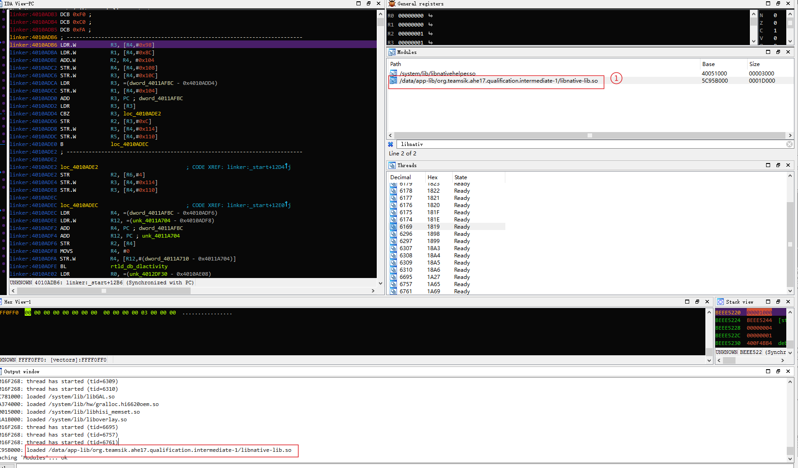

5月5号的时候收到了来自 teamsik 的 local hacker 邀请,不过由于机票太贵,负担不起,就没去了.
本博文是在比赛结束后才发出来的.
前不久在微博上看到有人发 Teamsik Android CTF,于是就放到浏览器书签里了, 由于当时只是说有这么个比赛,什么时候开始还没说,放在书签里好长时间,上周六(2017-04-15)晚上的时候,无事可做,就去翻翻看书签, 突然发现了这个东西, 赶紧打开一看,题目已经给出来了,放在 google drive 上,我看了看提交日期截止五月三日,还好没错过. 于是就做了一下,题目不是很难.在此简单记录一下过程.
Ubuntu 16.04 LTS x64 + apktool 2.1.1 + Android Studio(with smalidea plugin installed) + jadx 0.0.1 + Windows 10 虚拟机(with IDA Pro 6.8 installed)
一共三个apk:
使用 jadx 打开该apk,我们可以看到 主要有两个类: MainActivity,Verifier ,函数代码很简单, 在 MainActivity 中调用了 Verifier 中的 verifyPassword 方法来检测输入. 查看 Verifier 类,可知它的主要方法如下:
public static boolean verifyPassword(Context context, String input) {
if (input.length() != 4) {
return false;
}
byte[] v = encodePassword(input);
byte[] p = "09042ec2c2c08c4cbece042681caf1d13984f24a".getBytes();
if (v.length != p.length) {
return false;
}
for (int i = 0; i < v.length; i++) {
if (v[i] != p[i]) {
return false;
}
}
return true;
}
输入长度必须为 4,然后比对输入编码为一个 byte 数组,再和内置字符串生成的 byte 数组比 较,如果相等则成功.这里不是直接去看算法到底做了什么,我们要的是什么才是正确的 flag, 由于是 4 位长度,且都是数字,那么我们采用暴力法,从0000遍历到9999,逐一尝试看哪个正确. 因此我写出了下面的 Java 代码:
import java.io.*;
import java.io.UnsupportedEncodingException;
import java.security.MessageDigest;
import java.security.NoSuchAlgorithmException;
public class Jcode
{
public static void main(String[] args)
{
String input = "";
for(int i = 0;i < 10000; ++i)
{
//规格化字符串
input = "";
if(i < 10) {input = "000" +Integer.toString(i); continue;}
if(i < 100) {input = "00" +Integer.toString(i); continue;}
if(i < 1000) {input = "0" +Integer.toString(i); continue;}
input = Integer.toString(i);
//编码输入的字符串
byte[] v = encodePassword(input);
byte[] p = "09042ec2c2c08c4cbece042681caf1d13984f24a".getBytes();
int flag = 1;
for (int j = 0; j < v.length; j++)
{
if(v[j] != p[j]) flag = 0;
}
//判断
if(flag == 1)
{
System.out.printf(input);
break;
}
}
}
//-------以下一下代码直接拷贝自 jadx 的反编译结果------
private static byte[] encodePassword(String input) {
byte[] SALT = new byte[]{(byte) 95, (byte) 35, (byte) 83, (byte) 73, (byte) 75, (byte) 35, (byte) 95};
try {
StringBuilder sb = new StringBuilder();
sb.append((char) SALT[0]);
sb.append((char) SALT[1]);
for (int i = 0; i < input.length(); i++) {
sb.append((char) input.getBytes("ISO-8859-1")[i]); //这里注意是大写的ISO-8859-4
sb.append((char) SALT[i + 2]);
}
sb.append((char) SALT[6]);
byte[] result = new byte[0];
return SHA1(sb.toString()).getBytes("ISO-8859-1");
} catch (UnsupportedEncodingException e) {
e.printStackTrace();
return null;
}
}
private static String convertToHex(byte[] data) {
StringBuffer buf = new StringBuffer();
for (int i = 0; i < data.length; i++) {
int halfbyte = (data[i] >>> 4) & 15;
int two_halfs = 0;
while (true) {
if (halfbyte < 0 || halfbyte > 9) {
buf.append((char) ((halfbyte - 10) + 97));
} else {
buf.append((char) (halfbyte + 48));
}
halfbyte = data[i] & 15;
int two_halfs2 = two_halfs + 1;
if (two_halfs >= 1) {
break;
}
two_halfs = two_halfs2;
}
}
return buf.toString();
}
private static String SHA1(String text) {
try {
MessageDigest md = MessageDigest.getInstance("SHA-1");
byte[] sha1hash = new byte[40];
md.update(text.getBytes("iso-8859-1"), 0, text.length());
return convertToHex(md.digest());
} catch (NoSuchAlgorithmException e) {
e.printStackTrace();
return null;
} catch (UnsupportedEncodingException e2) {
e2.printStackTrace();
return null;
}
}
}
编译并执行上述代码,我们可以得到flag为: 9083
这里我将展示如何无源码调试 apk. 首先下载 smalidea , 你会得到一个 zip 包,打开 Android Studio,依次 Configure/Settings/Plugins/Install plugin from disk..., 选择下载的 smalidea 压缩包即可安装.
我们使用 apktool 反编译 Qualification-1.3-trivial-release.apk , 得到一个 目录 Qualification-1.3-trivial-release,打开 Android Studio, 然后 Import project(Eclipse ADT,Gradle,etc)选择刚刚 apktool 生成 的目录,接着选择 Create project from existing sources,其余的都按默 认就可以.这样的话,我们就新建了一个 smali 工程,如下图1所示:
我们单击图1中红框处,在下拉列表中选择Project,然后就变成了工程结构,如图2所示:
接下来我们可以使用 jadx 打开apk,对照这java代码,在smali里面找到关键地方,按下 Ctrl+F8 添加断点,
在安装前,应该修改 AndroidManifest.xml文件,添加 android:debuggable="true", 当你修改完后,需要重新打包,签名安装等,我写了个自动化脚本完成这些工作:
#! /bin/bash
#---------------------------------------------
# script name:apksign
# usage:apksign apk_project_folder
# 2016-07-27 Wed 11:24 AM
# by bugnofree www.ahageek.com
# 上面的工程文件夹是apktool反编译之后生成的文件夹,
# 第一次使用 apksign 时会要求输入一些信息,
# 关键是秘钥值,为and.key,其他随意输入,
# 执行一次后,以后打包只需要输入秘钥and.key即可自动打包.
#---------------------------------------------
# Android Applications Repack Script
# You should setup the following PATH variables:
# export PATH=${PATH}:${ANDROID_SDK}/tools
# export PATH=${PATH}:${ANDROID_SDK}/platform-tools
# export PATH=${PATH}:${ANDROID_SDK}/build-tools/23.0.2
if [ $# != 1 ]
then
echo "USAGE:$0 APK_PROJECT_DIR"
exit 1
fi
key_name="and.key"
key_psd="and.key"
key_alias="andkey"
#Rebuild Applications
apk_path=${1}"/dist/"
apk=${apk_path}${1}".apk"
apktool b ${1} -o ${apk}
#generate sign key
if [ ! -f "$key_name" ]
then
keytool -genkey -v -keystore ${key_name} -alias ${key_alias} -keyalg RSA -keysize 2048 -validity 20000
fi
echo "Sign the apk..."
#to sign the apk
jarsigner -verbose -sigalg MD5withRSA -digestalg SHA1 -keystore ${key_name} ${apk} ${key_alias}
jarsigner -verify -certs ${apk}
echo Get package name of $apk ...
#Uinstall firstly
#The "-r" option in sed is used to enable extend Reguler Expression which
#could make your life more convient when you write regular expression.
#Command "s" is used to replace the output with the matched strings.
#Format:sed option s/pattern/replace/soption
pkg_name=$(aapt dump badging "${apk}" | grep package | sed -r "s/package: name='([a-z0-9.]*)'.*/\1/")
echo "Uninstall the apk..."
adb uninstall ${pkg_name}
echo "Install the apk..."
#Install The Newer Apk Agin
adb install ${apk}
你需要适当的做出一些修改,比如环境配置,才可以让该脚本正常运行. 在手机上打开程序使其运行,然后回到 studio,在studio的工具栏有一个按钮 Attach debugger to Android process, 点击后如下图3所示:
附加后,在studio底部栏中的console TAB中将会看到以下输出:
Connected to the target VM, address: 'localhost:8600', transport: 'socket'
然后在手机上输入一些字符,将会在 studio 中断下,如下图4所示:
于是很快的我们就得到了本apk的flag为: AndroidHackingIsFun
调试本 APK 请务必用真机调试,因为我试了原生的诸多版本Android模拟器在IDA中都会出现 SIGIIL 错误.用真机则没有这个问题.这个问题暂时不知道原因,刚开始以为是Android SDK模拟器 的版本不对,于是就根据 APK 编译的目标平台重新建立了一个模拟器,测试仍然是无效的. 因此,调试该 so 文件我使用的真机.
由于我的工作环境略微有点复杂:windows10的虚拟机中安装了IDA Pro 6.8,然后在主机上安装了 Android SDK,也就是说adb是在我主机上起作用的,模拟器/手机是直接和主机相连接的, 因此对于 android_server 所用的 TCP 协议以及 jdwp 协议需要进行两次端口转发, 每一次都要做挺多步骤,因此我写了个 bash 脚本来自动化完成这些繁琐的工作.
#! /bin/bash
#文件说明
#IDA动态调试so库半自动化脚本
#针对每个应用程序,你需要修改 activity,filter,andsrv 变量
#apk的主activity名称
activity=org.teamsik.ahe17.qualification.intermediate/org.teamsik.ahe17.qualification.MainActivity
#进程的可唯一过滤的字符串
filter=intermedia
# android_server 路径
andsrv=/opt/idasodebug/
echo "Please confirm jobs listed as follows is done:"
echo "+1:Start android emulator/phone (only one instance)"
echo "+2:Install the target application in your android emulator/phone"
read -p "Press any key to continue if you are done...."
#-------------清理进程-----------
echo "#1: Clean progress...."
ps -elf | grep adb | awk '{print $4}'| xargs kill -9 $1
ps -elf | grep redir | awk '{print $4}'| xargs kill -9 $1
ps -elf | grep jdb | awk '{print $4}'| xargs kill -9 $1
#终结android_server
andsrv_pid=$(adb shell ps |grep android_server |awk '{print $2}')
adb shell "su -c 'kill -9 $andsrv_pid' "
adb start-server
sleep 1
#-------------启动android_server-----------
echo "# Start up android_server..."
adb push $andsrv/android_server /data/local/tmp/
#注意,必须以root权限运行android_server,否则IDA在附加进程时不显示其他进程
#特别是针对真机调试时,通过adb shell执行root权限的命令,方法如下:
#adb shell "su -c 'command'"
adb shell "su -c '/data/local/tmp/android_server' " &
#-------------协议转发,使得虚拟机中的IDA可以连接宿主机中的虚拟机-------------
echo "#2:ADB port forward IDA Pro...."
#获取主机IP地址(暂时不知awk的语法)
ip=$(ip route get 1 | awk '{print $NF;exit}')
echo "Your host IP address is $ip "
adb forward tcp:23946 tcp:23946
#放到子shell中执行,(每个)命令必须以分号结尾
redir --lport=23946 --laddr=$ip --cport=23946 --caddr=localhost &
#--------------启动apk-------------
echo "#3:Start up activity...."
adb shell am start -D -n $activity
read -p "Go on after you attach your IDA to your target application...ensure you have setup Debugger Option!"
#--------------获取apk的pid然后连接java调试器-------------
#取得pid所在行
pidline=$(adb shell ps | grep $filter)
#分割字符串
IFS=' ' read -a pidsplit <<< "${pidline}"
#目标进程的pid
pid=${pidsplit[1]}
echo "The PID of your target application is $pid"
echo "#4:ADB port forward for jdwp...."
adb forward tcp:7788 jdwp:$pid
#后台执行
redir --lport=7788 --laddr=$ip --cport=$pid --caddr=localhost &
echo "#5:Now go to your IDA and setup the Debugger Option!Press F9 to run the program until you encounter your target so lib then begin your debug travel..."
echo " jdb will give ouput \"Initializing jdb ...\" if you are do in the right way..."
jdb -connect com.sun.jdi.SocketAttach:port=7788,hostname=localhost
exit
上面说一下如何使用,在命令行上运行该脚本(名称为: idaso), 首先它会让你确认两件事情:
如果以上两件事情都完成了,那么按回车键继续.之后它将会清理进程,做的事情无非就是杀掉 adb什么的再重启,然后会上传并启动 android_server(android_server应该和 idaso 脚本位于同一目录 ),这些准备完后,将会以debug模式启动apk,启动后会要求你去设置IDAPro的远程连接,IP已经输出 了,此时进入IDA Pro,一次 Debugger/Attach/Remote Android Debugger,按如下图5设置:
之后在弹出的界面中选择要attach的进程,如下图6设置:
Attach之后就可以回到那个脚本界面,按回车继续.之后就可以再回到 IDA Pro里进行调试了. 在 IDA 中,我们需要再次设置调试选项,然后按下 F9 运行,这个apk需要 F9 多次,然后会弹出如 下图7对话框:
点击取消即可,直到程序跑起来,然后在程序中输入一个测试字符串,如123456789,然后按下 VERIFY PASSWORD按钮,IDA将会断下病弹出如下图7类似的对话框,我们还是点击取消.然后目标库 就会被载入,如下图8所示:
之后,在标记1处双击进入,在目标函数处下断点,然后F9运行程序,之后既可以正常调试了.
一般的,我们会动静结合来分析,由于本apk带有多个so库:
lib/
├── arm64-v8a
│ └── libnative-lib.so
├── armeabi
│ └── libnative-lib.so
├── armeabi-v7a
│ └── libnative-lib.so
├── mips
│ └── libnative-lib.so
├── mips64
│ └── libnative-lib.so
├── x86
│ └── libnative-lib.so
└── x86_64
└── libnative-lib.so
我们需要查看android设备的架构,然后得知到底加载的是哪一个so,通过命令 adb shell getprop可以获得系统的属性,其中ro.product.cpu.abi, 便是获得系统的构架: adb shell getprop ro.product.cpu.abi 我这里是armeabi-v7a,因此静态分析时应分析目录 armeabi-v7a 下的so库进行静态分析. 在目标库加载完后,查看模块列表中的so库基地址,在静态DIA中依次 Edit/Segment/Rebase,在打开的界面中,勾选Image Base,然后输入上面的基地址,点击确定. 这样静态分析的地址就和动态分析的地址一致了.在静态IDA中找到目标JNI函数,然后去动态IDA中下断点即可.
最后经过分析,实际检验过程在函数 int __fastcall Java_org_teamsik_ahe17_qualification_Verifier_checkPasswordByJNI(JNIEnv *env, jobject a2, jstring input) 中,有很多if语句判断,代码流程比较简单,两行python代码给出flag:
for num in "78 65 84 73 86 69 65 72 69".split():
print(chr(int(num)))
所以最后的 flag 是 NATIVEAHE.
最后补充一些东西如下:
r15 is the program counter. r14 is the link register. (The BL instruction, used in a subroutine call, stores the return address in this register). r13 is the stack pointer. (The Push/Pop instructions in "Thumb" operating mode use this register only). r12 is the Intra-Procedure-call scratch register(内部程序调用暂存寄存器). r4 to r11: used to hold local variables. r0 to r3: used to hold argument values passed to a subroutine, and also hold results returned from a subroutine. If the type of value returned is too large to fit in r0 to r3, or whose size cannot be determined statically at compile time, then the caller must allocate space for that value at run time, and pass a pointer to that space in r0.
附件下载:链接：http://pan.baidu.com/s/1jIDmtCi 密码：defm